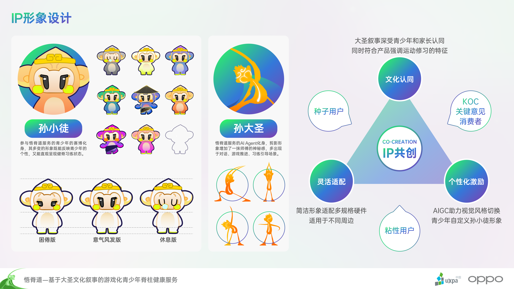
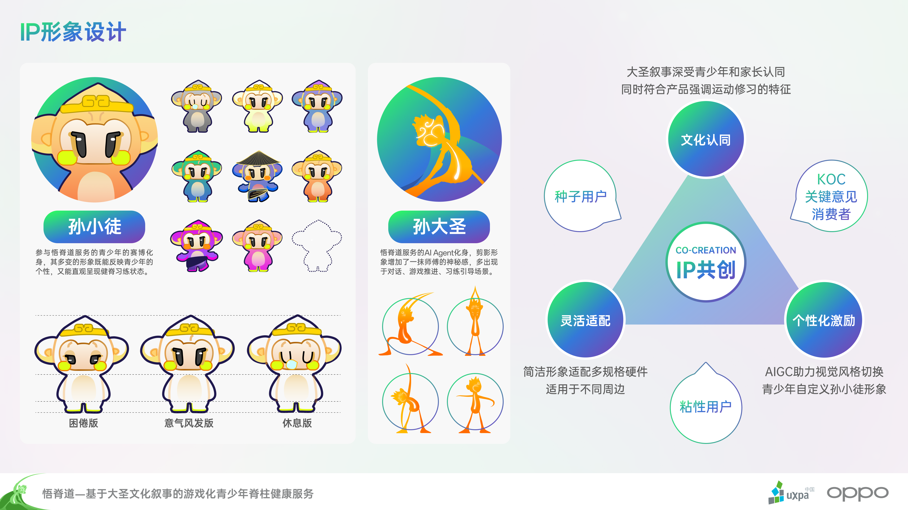
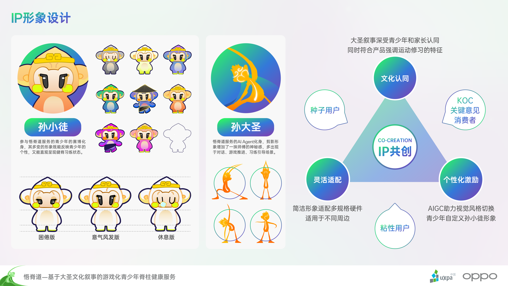
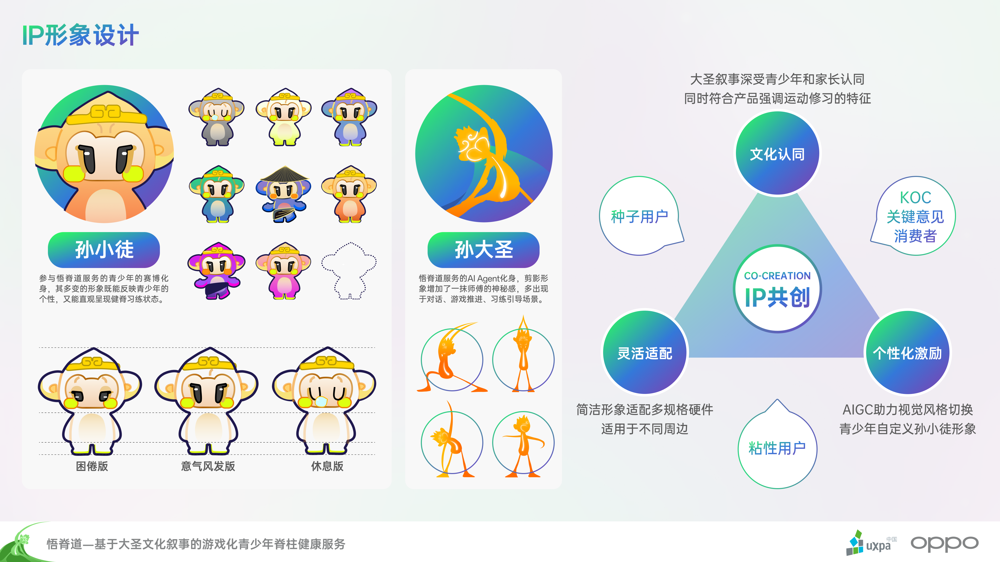

 

悟脊道——青少年脊柱侧弯干预产品服务体系设计
本项目获第十六届国际用户体验创新大赛全国二等奖（OPPO企业命题赛道）。
持续更新迭代的数字内容与硬件产品体系，共同构成悟脊道——基于大圣文化叙事的游戏化青少年脊柱健康服务生态。 为了促成生活方式整体上的改变，悟脊道提出数据驱动的可持续服务闭环：用户、服务机构、中小学校、医疗研究团队、供应商、政府相关部门等各利益相关者，都将成为数据的贡献方和获益者。 另一突破是，悟脊道以大圣AI Agent作为数字内容的核心驱动力，基于来自真实世界的数据、主动健康的信念以及快乐运动的目标，自主计划调用不同能力工具，如进行运动处方的游戏化转化、健脊计划的个性化制定；根据实时的动作捕捉给予用户声光反馈、为运动动作匹配适合的运动空间；与用户对话，报告健脊情况、推荐适合的医疗资源等。实现突破边界的设计交付，创造亲切如一的用户体验。